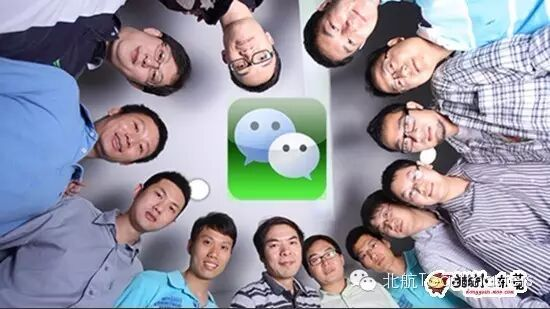
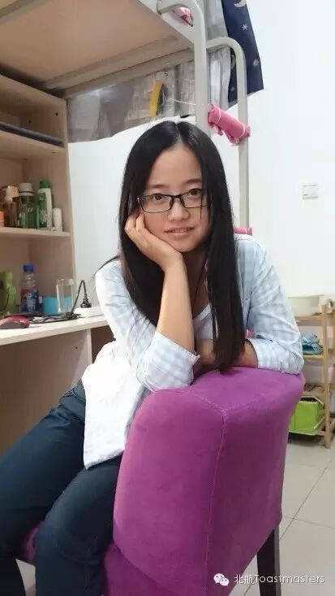
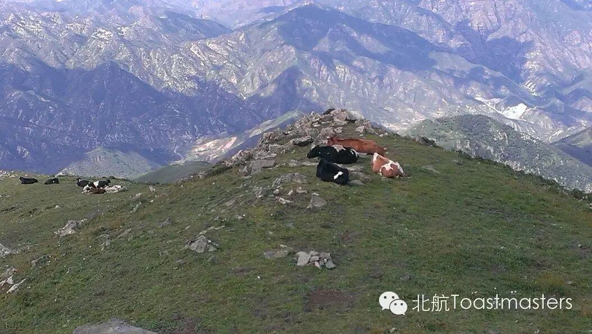
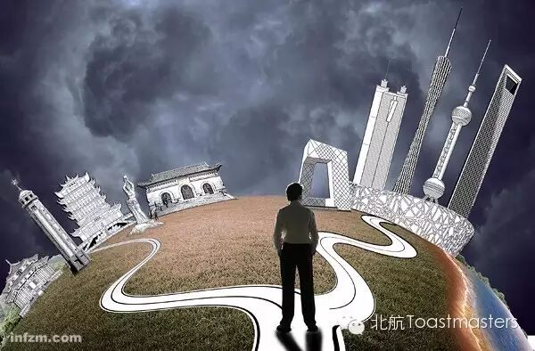

friends circle
TM:Rita
TTM:Joy
Have you ever thought about what makes you human, what defines you as this uniqueyou in the world? One of the answers might be the connection you have with the outside world. For example the friends circle you have. There is no one else that can have the same friends circle with you. In a way, your friends circle defines you. You spend time with your friends circle, you learn from them and you are influenced by them. There are two kinds of friends circle: one in reality and one in virtual world. The one in reality is the friends circle you hang out with and the one in virtual is in your wechat app. Toastmasters areeager to know your stories about your friends circle both in real world and invirtual world and how these friends circle defines you.

K&K
This Friday eveningour new member Kiki will give her cc1 speech about herself. Kiki is unique girlwith glowing eyes. Her long hair may impress you as a tender girl but after you heard her cc1 speech and her story about herself you will change your opinion. Toastmasteris sure that you all will be surprised by her speech. The title is K&K. it is presumed that the first K is her name, but what the other K stands for? Let us look forward to Kiki’s cc1 speech.

My experience in this summer holiday
The world is so big that I wanna go and have a look at it. Also there is famous line from the famous movie called Roman Holiday: You can either travel or read, but either yourbody or soul must be on the way. Especially for us students who are not yet burden by job and family and children, it is time you take every chance totravel. When one travels to see the world, he does not just see, but also takein and grow. This Friday night Vance will deliver a speech about his summertravels. He had been to many places in the summer and He will tell his adventures and expedition during his travel. Let’s us wait to be surprised.

Decision
Life is box of chocolate, chocolate of different taste and flavors, even of different size and original country. But you cannot have them all, we will have to make a decision to choose some of them. Life is full of decisions. When you have to make a decision, will you hesitate? Will you ask around for advices or just listen to the inner voice of yourself? This Friday night our senior member Keven will deliver a speech on decision and let’s hear out Keven’s opinions on decision making.

https://mp.weixin.qq.com/s/TLka1wGDS3FFS6CEndsUGQ
本页为抢救式本地归档，图文已永久保存。